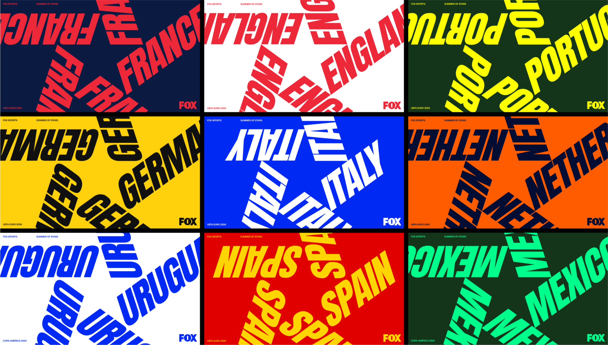
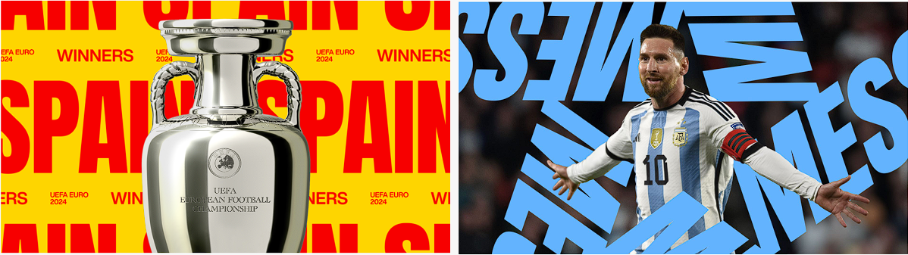
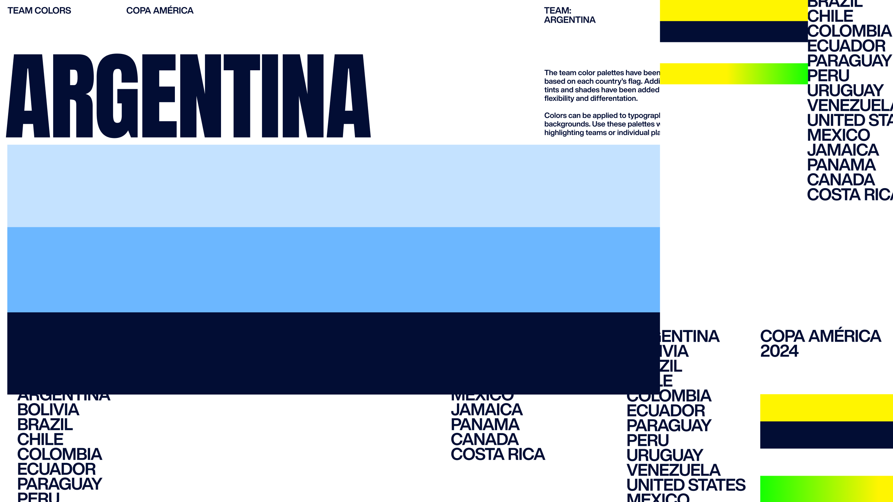
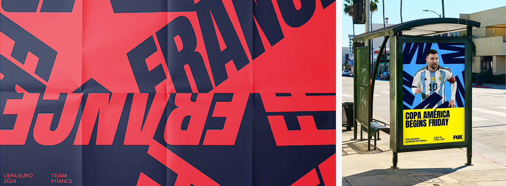

New York City FC presenta una actualización de su emblema, manteniendo su icónica identidad mientras introduce mejoras sutiles en diseño y tipografía. El nuevo escudo, diseñado por el tipógrafo Tobias Frere-Jones, refuerza la conexión con los fans y celebra el legado del club, preparándose para un futuro ambicioso.
Fox Sports ha lanzado una nueva identidad visual para su campaña "Summer of Stars", que coincide con la cobertura de los torneos de la UEFA Euro 2024 y la Copa América en Estados Unidos. Este emocionante diseño fue desarrollado por el estudio THRU, que capturó la esencia del verano y la presencia de las principales estrellas del fútbol mundial en el escenario global
La identidad gráfica de "Summer of Stars" se basa en un sistema de diseño integral que incluye composiciones tipográficas en forma de estrellas, reflejando el tema central de la campaña. Utilizando dos tipografías principales, Anton y Helvetica Now, el diseño busca ser claro y llamativo, adaptándose perfectamente a diferentes aplicaciones y formatos. El uso de rayas, inspiradas en la iconografía del fútbol, añade cohesión y permite variaciones creativas mientras mantiene la consistencia de la marca.
La paleta de colores incluye tonos cálidos que evocan el verano, con un amarillo brillante que simboliza la energía y el dinamismo de la temporada. Este enfoque también se complementa con gradientes que aportan profundidad y movimiento a los gráficos, realzando el impacto visual de la campaña.
La identidad gráfica de "Summer of Stars" se basa en un sistema de diseño integral que incluye composiciones tipográficas en forma de estrellas, reflejando el tema central de la campaña. Utilizando dos tipografías principales, Anton y Helvetica Now, el diseño busca ser claro y llamativo, adaptándose perfectamente a diferentes aplicaciones y formatos. El uso de rayas, inspiradas en la iconografía del fútbol, añade cohesión y permite variaciones creativas mientras mantiene la consistencia de la marca.
La paleta de colores incluye tonos cálidos que evocan el verano, con un amarillo brillante que simboliza la energía y el dinamismo de la temporada. Este enfoque también se complementa con gradientes que aportan profundidad y movimiento a los gráficos, realzando el impacto visual de la campaña.
Además de los elementos gráficos bidimensionales, la campaña incorpora imágenes tridimensionales de los trofeos de la Copa América y la UEFA Euro 2024, lo que añade una capa de detalle y prestigio a la presentación. Estas representaciones no solo son visualmente impresionantes, sino que también ayudan a crear un sentido de anticipación y emoción en torno a los torneos.
 